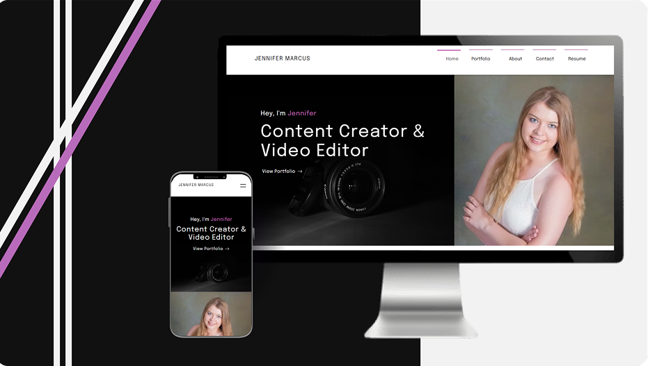
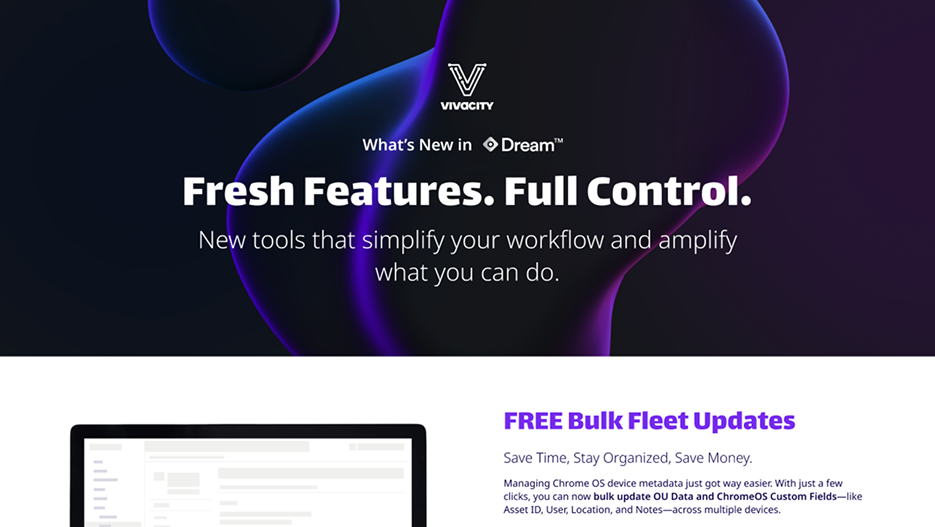
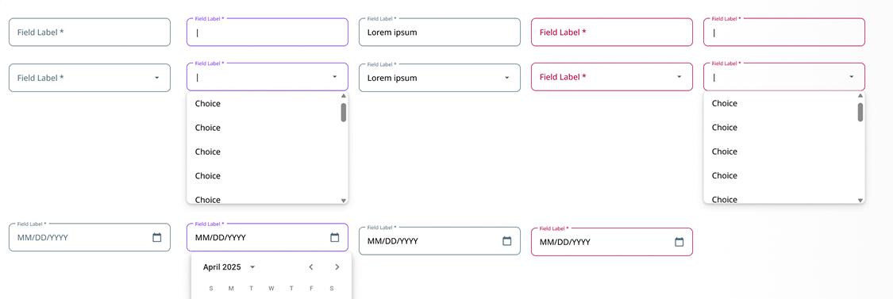
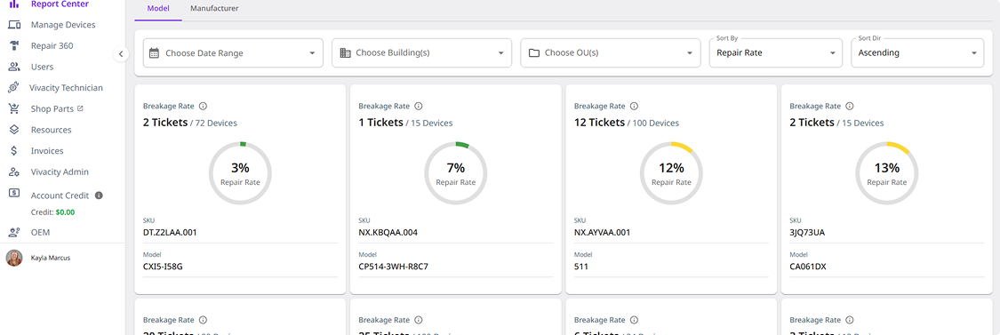
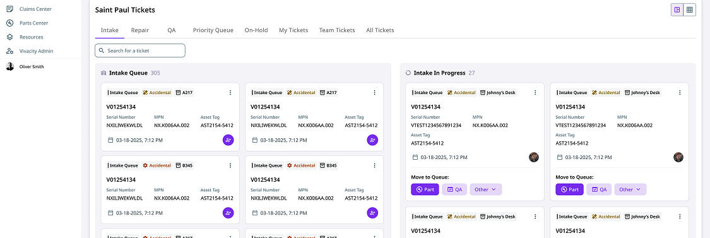
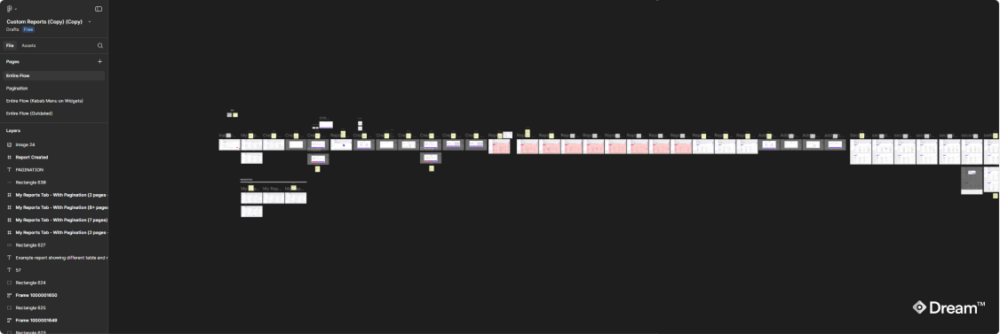

My Work.
My focus is UX/UI and product design for SaaS apps, supported by front-end knowledge that bridges design and development. I also create branding, illustrations, and marketing visuals.

SaaS asset management app (Dream™ Asset Management) | Vivacity Tech PBC
Redesigned and prototyped an asset management & repair ticket app to improve usability, streamline workflows, and enhance clarity for K-12 schools. Focused on intuitive navigation, clean UI, and efficient task management while preserving technical feasibility.

Custom Wix portfolio showcasing digital media work | Freelance
Designed and built a custom Wix portfolio to highlight video editing and content projects. Used no-code tools to create an engaging layout, organize media, and ensure cross-device usability.

Personal Web Design & Development Portfolio (Where You Are Right Now!)
Built a fully custom portfolio website from scratch, showcasing design and development projects with a focus on performance, accessibility, and authentic personal branding.

Interactive College Cost Calculator | Personal Project
Designed and built a responsive calculator that helps students estimate Ridgewater College semester expenses. Developed using JavaScript for calculations, focusing on clear financial visualization. Note: This was a tool built for my own use and was not used by the college.

Custom-coded informational and scheduling site | Personal Project
Designed and developed a responsive website from scratch with HTML, CSS, and JavaScript. Focused on accessibility, intuitive navigation and a clear presentation of tutoring and simple scheduling information.

Quarterly Software Release One-Pager | Vivacity Tech PBC
Designed a concise, visually engaging one-pager to help the marketing team promote and communicate key features of quarterly software updates.

Local Event Marketing Materials | Pro Bono Work
Designed posters and event buttons to promote local community gatherings. Focused on bold visuals, clear messaging, and consistent branding to capture attention. Note: Names, photos, and event details have been removed for privacy.

Standardizing UI Patterns to Speed Up Design
Developed a reusable token and component design system in Figma, replacing repetitive manual edits with consistent, state-ready elements. This reduced typical workflow time for input fields from 4 minutes to 40 seconds, resulting in a 6x boost in speed and an overall improvement in consistency.
Read More
Simplifying Data for Faster Decisions
Transformed text-heavy repair reports into visual summaries using color-coded cards, tables, and quick comparison cues. This enabled users to assess device reliability at a glance and act more confidently and efficiently.
Read More
Reducing Cognitive Load With Visual Workflows
Redesigned a complex repair workflow into a clear, visual system that reduced cognitive load, improved accuracy, and helped technicians complete tasks faster with fewer errors.
Read More
Simplifying Complex Processes
Explore how and why I improved Dream™’s UX/UI by redesigning core workflows, streamlining technician processes, and ensuring clarity with consistent, intuitive interfaces—all while preserving technical feasibility.
See Full Dream™ Case Study